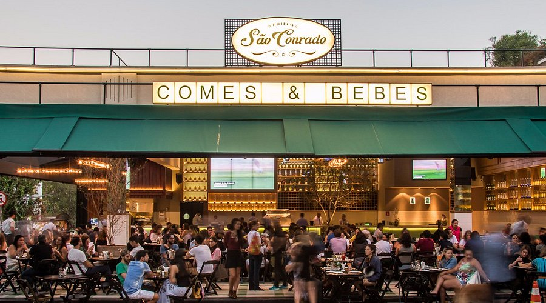

São Paulo - Terça-feira, 22 de abril
- 19:30 – Bar São Conrado - Pinheiros.

Dia 1 – Quarta-feira, 23 de abril
- 13:00 – Chegada em Campos do Jordão e boa oportunidade para começar a explorar a cidade.
- 14:00 – Caras de Malte.
- 16:00 – Check-in no hotel.
- 17:00 – 19:00 – Passeio pela Vila Capivari. Caminhada pela área central da cidade, com lojas, cafés e belas paisagens. Aproveite para ambientar-se com o clima da cidade.
- 19:30 – Jantar no Tuya Restaurante.

Dia 2 - Quinta-Feira, 24 de abril
- 8h30 – Café da manhã no Sans Souci.
- 9h30 – Morro do Elefante (Trenó e Teleférico).
- 12h30 – Almoço no Restaurante Bella Vista.
- 14h – Bosque do Silêncio e Bar da Baden Baden.
- 20h – Só Queijo - Fondue.

Dia 3 - Sexta-Feira, 25 de abril
- 8h – Café da manhã.
- 9h – Mirante Toriba e Pico do Itapeva.
- 11h – Parque da Cerveja e Mirante Mantiqueira.
- 12h30 – Almoço no Restaurante Alto da Brasa.
- 15h30 – Prana Parque (Pôr do Sol).
- 21h – Beiços Burguer.

Dia 4 - Sábado, 26 de abril
- 8h – Café da manhã.
- 9h – Parque Capivari.
- 10h30 – Parque Bambui.
- 12h30 – Almoço na Gard Cervejaria.
- 16h – Fábrica Baden Baden na cidade.
- 20h – Esquina do Djalma e bater perna.